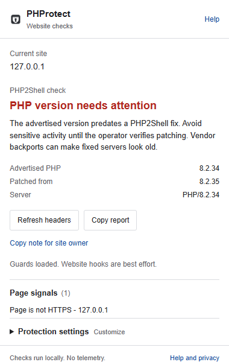

Local website checks
PHProtect compares advertised PHP versions with the bundled PHP2Shell advisory and adds best-effort guards for recovery phrases, supported wallet requests and recognized clipboard commands.
A browser extension cannot patch PHP or verify that a website is safe. Headers and heuristics can be wrong. Website hooks can be bypassed. Read the capabilities and limitations before using it.
Install in Chrome
- Download the Chrome ZIP from the official release.
- Extract the ZIP to a permanent folder. Keep that folder; Chrome loads the extension from it.
- Open
chrome://extensionsand turn on Developer mode. - Choose Load unpacked and select the extracted folder containing
manifest.json. - Pin PHProtect and reload your websites. Open its popup to see evidence, guard availability and settings.
The source installation is available now. Chrome Web Store submission status is maintained in the README. A source installation does not imply store approval. Firefox is experimental.
Extension screenshot
Actual interface with inert local test data. No real account or attack is pictured.

Privacy and source
Checks run locally. No telemetry, account or developer-operated backend. Some page text, form values, supported wallet calls and intercepted clipboard text are processed on your device.
Forks welcome
MIT licensed. Anyone can inspect, fork, modify and redistribute PHProtect under the applicable license notices. No pull requests are accepted. Sensitive reports should use private vulnerability reporting.